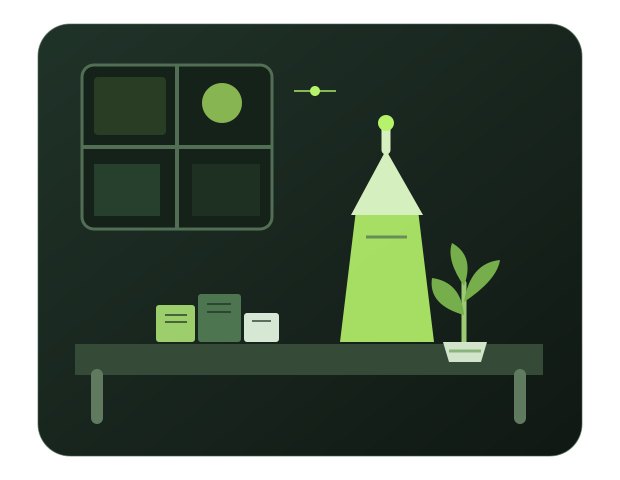

Web development
Learning how to turn a simple idea into a clean, responsive website with HTML and CSS.
Explore my notes →STUDENT • BUILDER • CURIOUS MIND
Hey, I'm Saqib — a computer science student exploring web development, problem-solving, and the small ideas that turn into useful projects.

A LITTLE INTRO
Building a strong foundation, not rushing the process.
Learning how to turn a simple idea into a clean, responsive website with HTML and CSS.
Explore my notes →Practising programming fundamentals and getting more comfortable with logic one concept at a time.
My learning path →Bringing together design, storytelling, and technology to make things worth sharing.
What I enjoy →
THE PROCESS
I'm documenting what I learn, the things I build, and the lessons that make the next attempt a little better. This site is a work in progress — just like the person behind it.
Visit the blogHAVE A LOOK AROUND
Explore the pages, read a note, or get in touch.